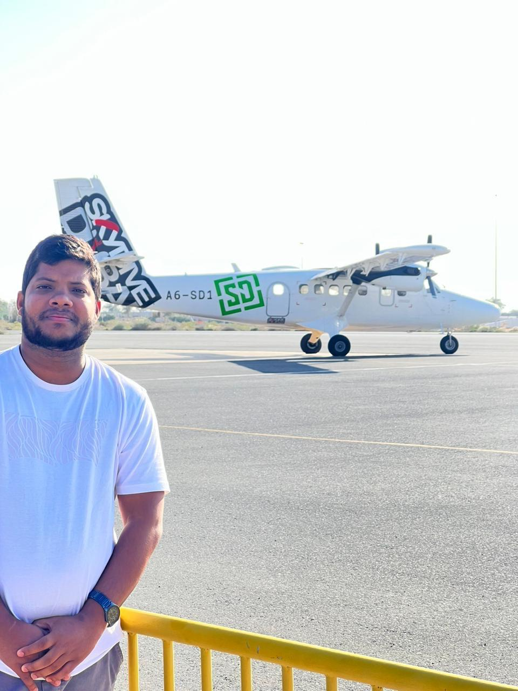
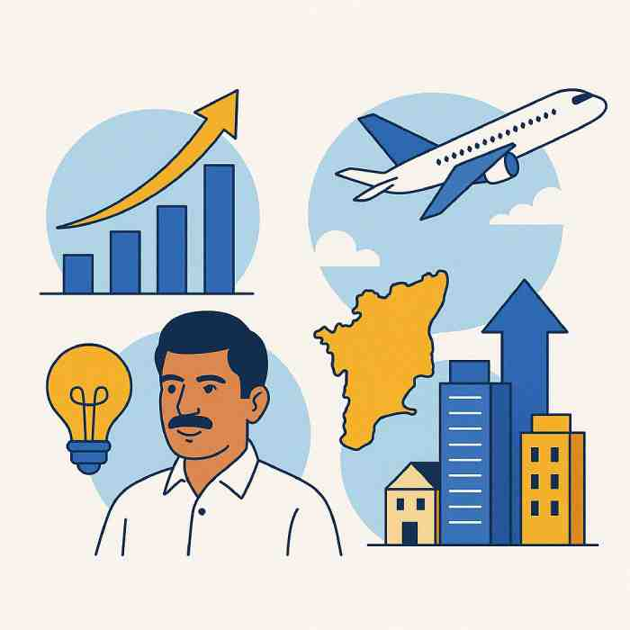

Abinaya Airways LLC
Pioneering a full-service airline based in Dubai with a 500 Cr INR investment, connecting major Indian cities through a fleet of Embraer E175s.
Aviation Visionary. Entrepreneur. Nation Builder.
From the shores of Kanyakumari to the skies of Dubai — I am the first person based in Dubai to receive a commercial airline license, now on a mission to transform Tamil Nadu into a global aviation hub and empower Indian entrepreneurs worldwide through innovative ventures in aviation, business, and global trade.
Every initiative I lead is rooted in impact — from connecting continents through aviation to uplifting communities through employment, education, and business empowerment. Here’s a glimpse into the work that defines my mission.
Pioneering a full-service airline based in Dubai with a 500 Cr INR investment, connecting major Indian cities through a fleet of Embraer E175s.
A social-impact job placement platform that has empowered over 13,800 individuals with free overseas employment opportunities.
Guiding over 7,800 small businesses toward sustainable growth through practical mentorship and strategic advice.
Providing academic and career counselling in 39+ colleges, helping students find direction and global education opportunities.
A comprehensive business solutions platform offering:
From humble beginnings in Nagercoil, Kanyakumari district, my journey has been guided by a singular vision — to build businesses that empower people and connect nations.
I became the first person based in Dubai to obtain a commercial airline license, laying the foundation for Abinaya Airways LLC, a full-service airline launched with the vision to link India and the UAE through reliable, regionally focused routes.
Over time, I’ve led initiatives like Easy Get Jobs, placing over 13,877 individuals in secure employment — completely free of cost. Through the Business Counselling Academy, I’ve guided over 7,800 organizations toward growth and resilience. My passion for education led to establishing Study Counselling Centres in 39+ colleges, guiding students toward their futures.
Recognizing the growing need for cross-border entrepreneurship, I founded Abinaya Global Business Hub — enabling Indian professionals and companies to expand globally through world-class PR, financing solutions, virtual offices, and overseas company setups.
With every step forward, my goal remains the same: to build purpose-driven businesses that uplift, inspire, and connect.

Every step I take — whether in aviation, employment, or education — is grounded in a mission to create meaningful impact. My vision extends beyond business success; it’s about building a future where opportunity, innovation, and empowerment go hand in hand.
To build purpose-led ventures that create real-world impact — empowering individuals through employment, supporting small businesses, guiding students toward opportunity, and transforming regional aviation into a global standard.

To position Tamil Nadu as a global aviation hub, fostering economic growth, connectivity, and innovation — while aligning with the leadership and development vision of Honourable Deputy Chief Minister Thiru. Udhayanidhi Stalin avargal.
Each number below tells a story of purpose, progress, and people empowered. These are not just statistics — they’re milestones on a journey of building meaningful change.
People Employed through Easy Get Jobs
Small Businesses Guided through Business Counselling Academy
Reached through Study Counselling Centres
Initial Investment in Abinaya Airways LLC
Fleet Strength, Serving Key Routes
Planned for Air & Seaplane Connectivity
“Business should uplift people, not just build profit. True success lies in impact — when others rise with you.”— Sahaya Antony Monish
“வணிகம் லாபம் மட்டும் அல்ல; அது மனிதர்களை உயர்த்தும் ஒரு சாதனமாக இருக்க வேண்டும். உண்மையான வெற்றி என்பது, மற்றவர்கள் உங்களுடன் உயர்வதைப் பார்க்கும் தருணத்தில் தான் உள்ளது.”
— சகாய ஆண்டனி மோனிஷ்